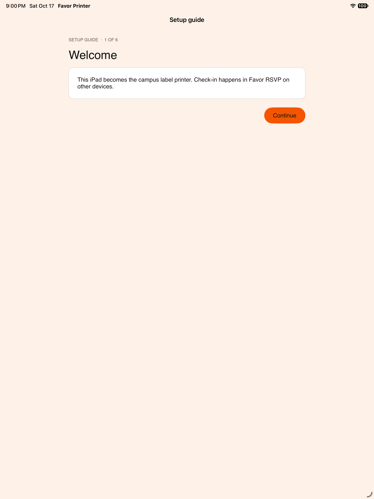
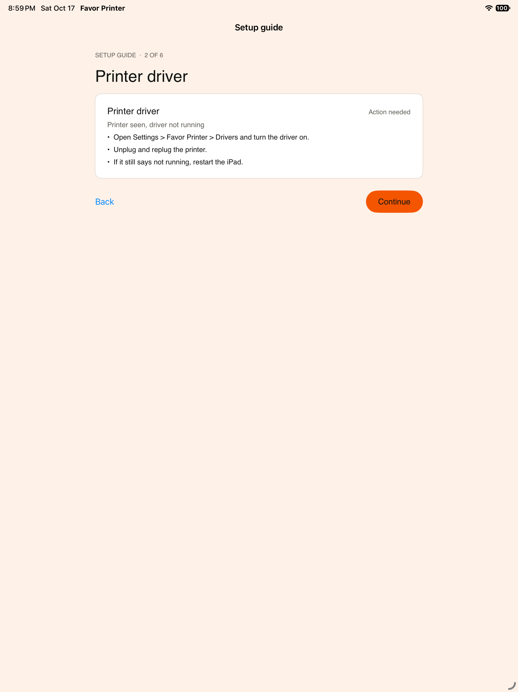
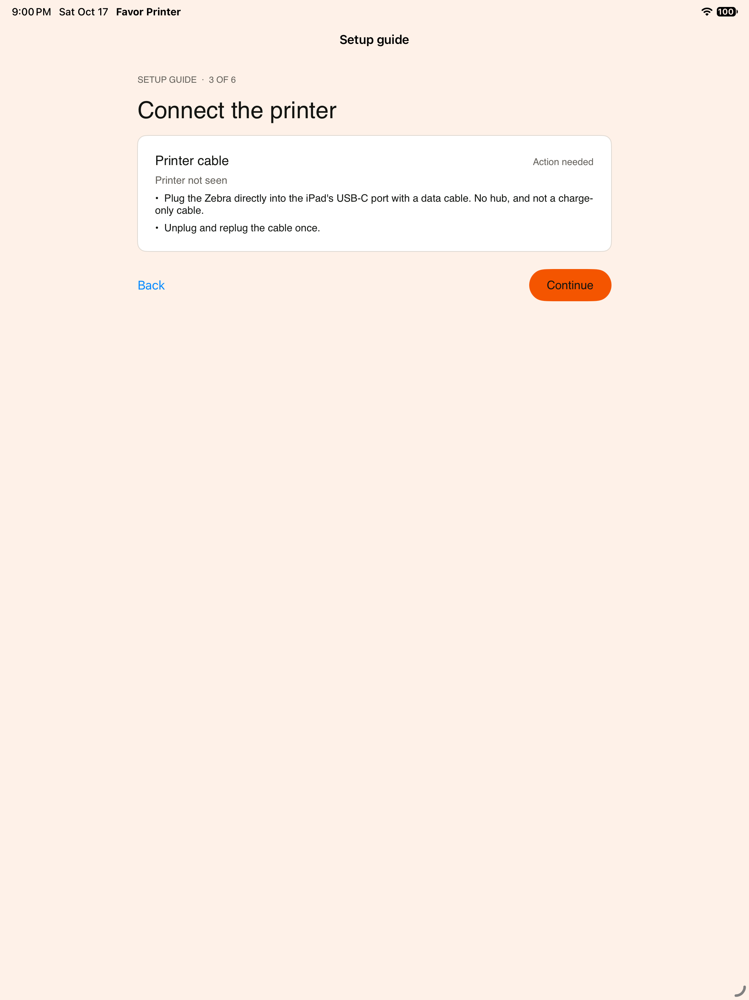
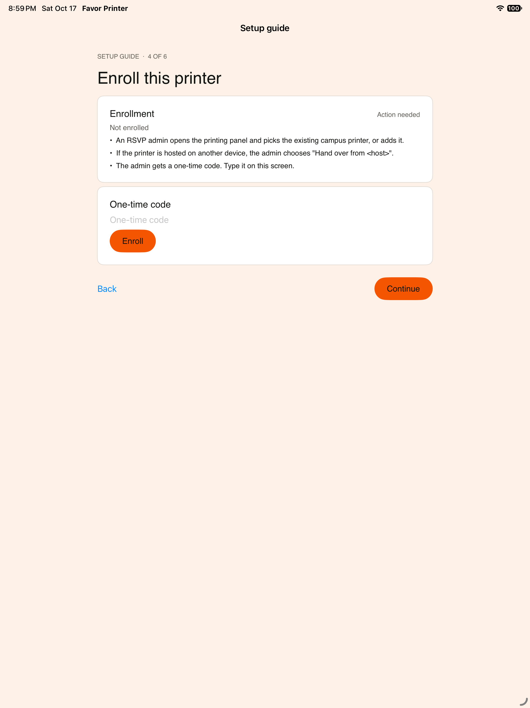
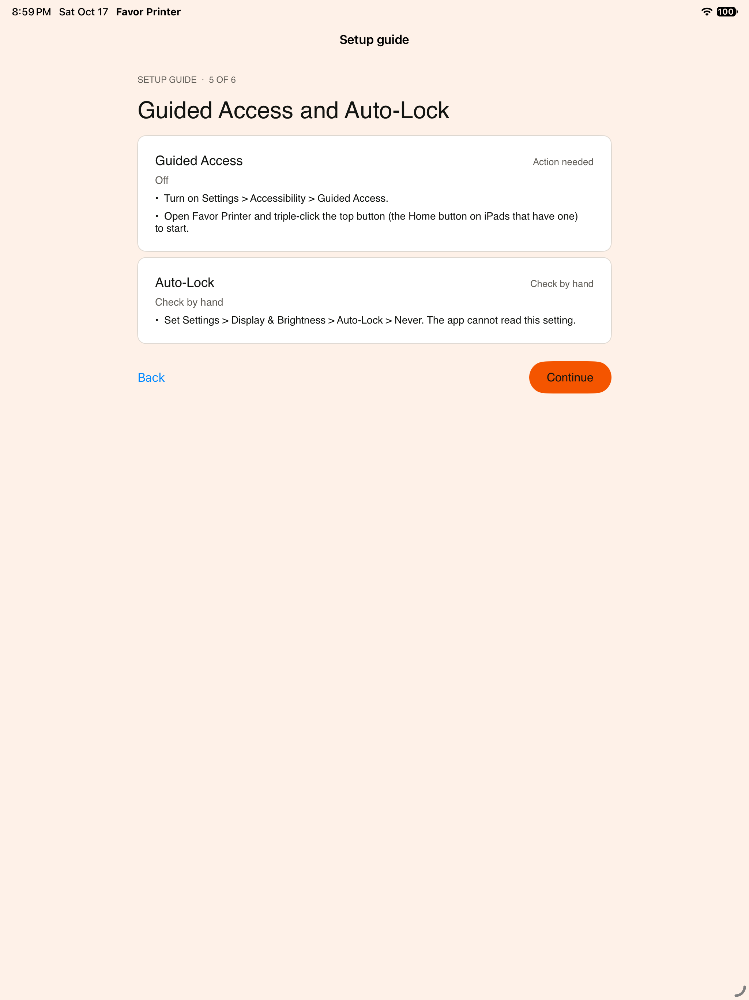
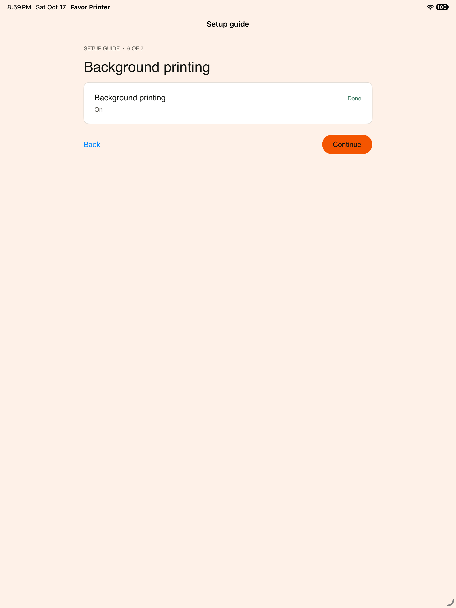
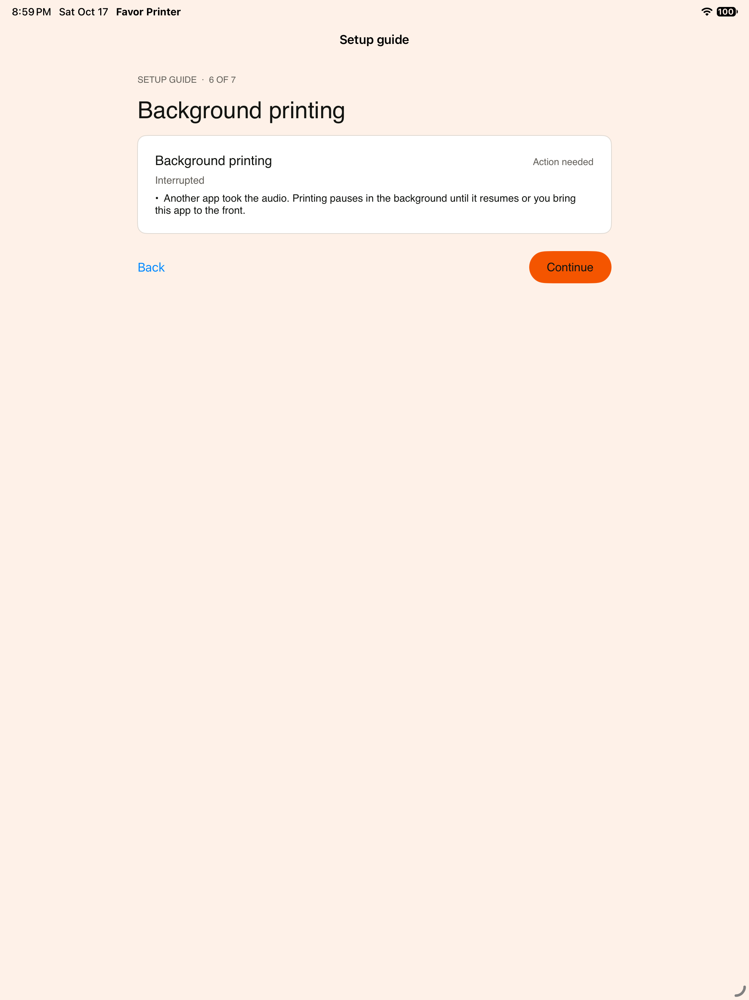
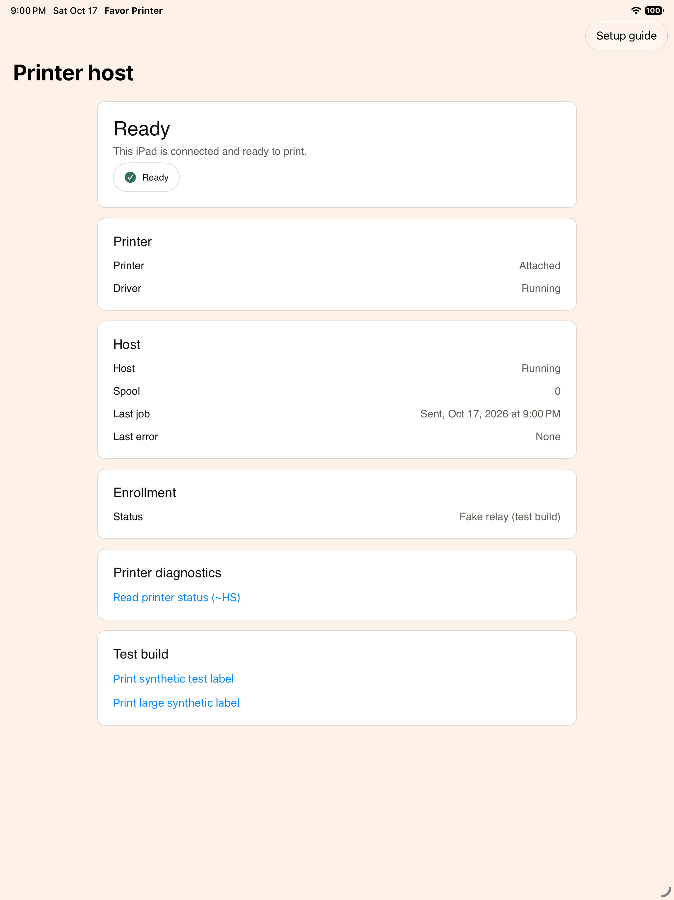
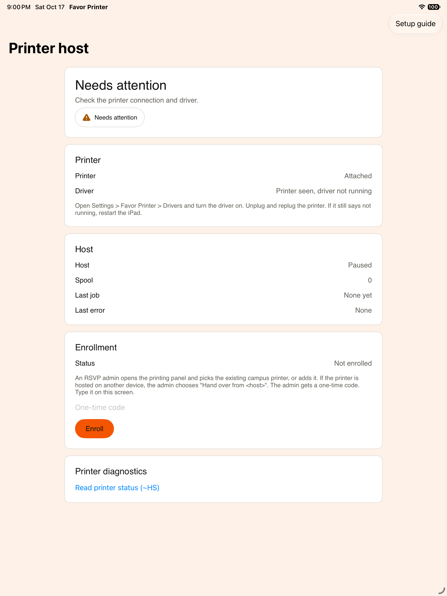

Favor Printer iPad setup guide
iPad simulator screenshots from the mocked backend. Nothing here is verified on a real iPad. See README.md.

onboarding-welcome. Setup guide, first screen. Explains that this iPad becomes the campus label printer.

driver-not-running. Setup guide, Printer driver. The printer is seen but the driver is off, with the Settings steps to turn it on.

printer-not-seen. Setup guide, Connect the printer. No printer on the cable, with the direct USB-C steps.

enrollment-help. Setup guide, Enroll this printer. The one-time code field and what the RSVP admin does first.

guided-access. Setup guide, Guided Access and Auto-Lock. Guided Access is off, with how to turn it on.

background-on. Setup guide, Background printing. Keep-alive is on and nothing is interrupting it.

background-interrupted. Setup guide, Background printing. Another app took the audio, so printing pauses in the background.

status-ready. Printer host status, Ready. Printer attached and driver running.

status-needs-attention. Printer host status, Needs attention. Printer seen but the driver is not running.